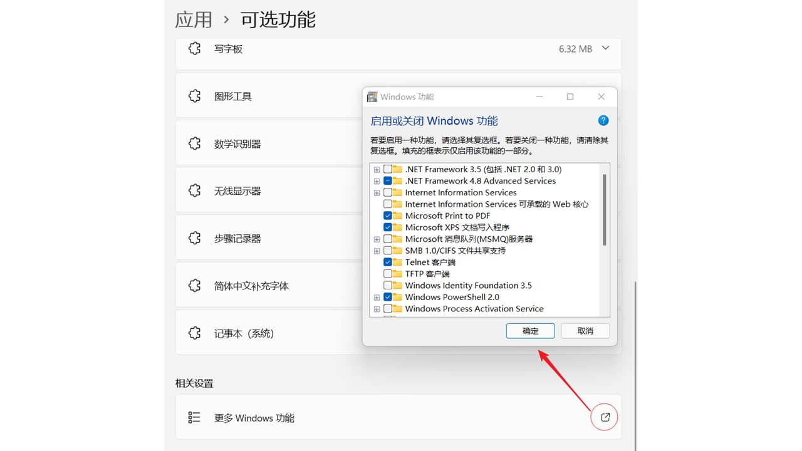
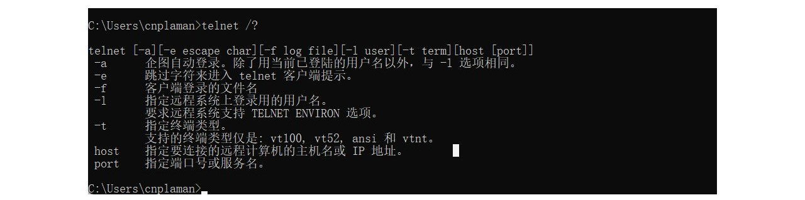
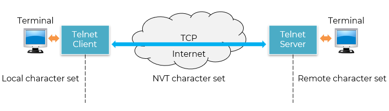

又称为终端仿真协议
是互联网的正式标准
远程系统管理
网络设备调试
协议测试与教学
内网/隔离环境使用
脚本自动化
在本地系统运行 TELNET 客户进程
远地主机则运行 TELNET 服务器进程
几乎所有现代系统默认自带
凡是能用 SSH 的地方，绝不该用 Telnet
C:\Users\huawei>telnet /? 'telnet' 不是内部或外部命令，也不是可运行的程序 或批处理文件


定义数据和命令如何在互联网上传输
所有 Telnet 通信都以 NVT 格式 在网络上传输
客户端和服务器各自负责本地终端 ↔ NVT 之间的双向转换

7 位 ASCII 码（即 0–127）作为基本字符集
最高位为0：数据字符
最高位为1：控制字符
回车（CR） = ASCII 13（\r）
换行（LF） = ASCII 10（\n）
| 0 |
| 1 |
ASCII码
7位共 128个字符：0 - 127
95个可打印字符：字母、数字、标点，32 - 126
33个控制字符：0 - 31，127
Switch>en Switch#conf ter Switch(config)#hostname cnplaman cnplaman(config)#enable password en123 cnplaman(config)#end
cnplaman(config)#interface vlan 1 cnplaman(config-if)#ip address 192.168.1.2 255.255.255.0 cnplaman(config-if)#no shutdown
cnplaman(config)#line vty 0 4 cnplaman(config-line)#password line123 cnplaman(config-line)#login cnplaman(config-line)#end
cnplaman#show running-config Building configuration... Current configuration : 1137 bytes ! version 15.0 ! hostname cnplaman ! enable password en123 ... ... interface Vlan1 ip address 192.168.1.2 255.255.255.0 ! line con 0 ! line vty 0 4 password line123 login line vty 5 15 login ...
C:\>telnet 192.168.1.2 Trying 192.168.1.2 ...Open User Access Verification Password: cnplaman>en Password: cnplaman#
The client TELNET converts the characters from the local terminal into NVT format and then sends them to the network.
Then the server TELNET converts NVT-formatted data and commands into a format that the Remote Computers can understand.
The Network Virtual Terminal (NVT) primarily employs two sets of characters: one for data and another for control.
The NVT is an 8-bit character set for data, with the 7 lowest-order bits identical to ASCII and the highest bit set to 0.
The NVT uses an 8-bit bit character set to communicate control characters between the computers, with the highest-order bit set to 1.
For sending data and control characters the TELNET makes use of the same connection by just inserting control characters into the data stream.
Each control character is preceded by the Special Control character, which is popularly known as Interpret as Control, for separating the data characters from the control characters (IAC).